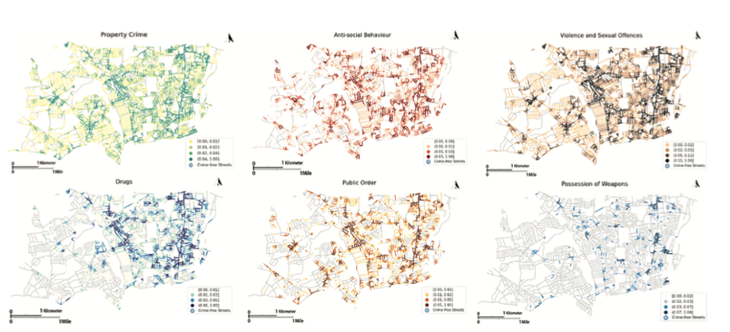
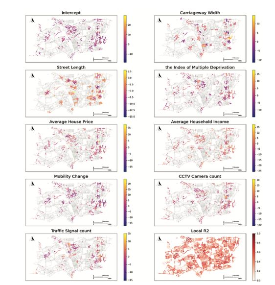

In urban landscapes, where the rhythm of life is as diverse as the people walking its streets, the importance of understanding and addressing crime at a granular level cannot be overstated. Street-level crime hotspot detection serves as a critical lens, providing nuanced insights into the patterns and dynamics of criminal activity, far beyond the generalized overviews offered by broader hotspot analyses.
Identifying “hot streets” is not just about pinpointing locations with high crime rates; it’s about delving deeper into the urban fabric, understanding the intricate interplay of socio-economic factors, mobility patterns, and environmental contexts that contribute to criminal activity. This granularity enables law enforcement agencies to allocate resources more effectively, tailor interventions to specific community needs, and foster safer, more resilient urban environments.
Against this backdrop, Yuying Wu embarked on her placement journey at Haringey Borough Council, armed with the theoretical and practical skills acquired through the MSc Urban Informatics Programme. Her mission was to unravel the complexities of region’s “hot streets”, turning every corner and alley into a canvas of learning and exploration, culminating in her paper, “Hot Street” of Crime Detection in London Borough and Lockdown Impacts”, bringing to light new perspectives on crime detection and the implications of urban dynamics.
Navigating the Urban Maze: Uncovering the Hidden Layers from Crime Hot Spots to Crime Hot Streets
Yuying’s work stems from the notion of “Hot Spots Policing”, a strategy that has proven effective but seeks refinement in the granularity of its focus. With cities grappling with escalating crime rates and finite police resources, there is an emerging need for more precise interventions at finer geographic units. Yuying’s research addressed this gap by developing an algorithm to detect crime patterns at the street level (shown in Figure 1), aiming to aid the Criminal Investigation Department (CID) in identifying transitive crime moments efficiently.

Figure 1 “Hot street” maps of different crimes in Haringey in 2020
Crafting Insight: A Journey of Innovation and Discovery in Crime Analysis
Leveraging the Kernel Density Estimation (KDE) technique, Yuying applied it to street networks within a case study borough in London. The generated “hot street” maps categorised by crime type, demonstrated the potential for enhancing police patrol allocation and sustaining Strategic Crime Analysis (SCA). Additionally, Yuying delved into the contextual characteristics of these “hot streets”, recognising the significance of Geographically Weighted Regression (GWR) model and identifying eight pivotal contextual factors influencing varied street crimes as shown in Figure 2 .

Furthermore, Yuying unveiled the shifting dynamics of crime patterns amidst the COVID-19 lockdowns. Her findings painted a scene of contrasting human mobility; while commercial areas in Haringey saw a decline, residential areas experienced an uptick, impacting the type and frequency of crimes.
The lockdown measures led to a decrease in property crimes due to reduced opportunities and heightened home surveillance, reflecting the symbiotic relationship between human mobility and crime rates. However, this period also saw a spike in anti-social behaviour and drug-related offenses, revealing the complexity of crime dynamics influenced by socio-economic factors and community tensions.
As the restrictions eased and mobility increased, a surge in various crimes was observed, indicating a direct correlation with the availability of potential crime targets.
Cultivating Practical Wisdom: The Symbiotic Dance of Theory and Practice through the MSc Advantage
Yuying’s journey through the “crime hot streets” of London is a testament to the transformative power of applied knowledge. Her experience at Haringey Borough Council and the insights gained therein reflect the ethos of the MSc Urban Informatics Programme – fostering a space where academic principles meet real-world challenges, inspiring the next generation of urban scientists to shape a more secure and equitable urban future.
(Editor: Mr. Xiaowei Gao, Dr. Yijing Li)